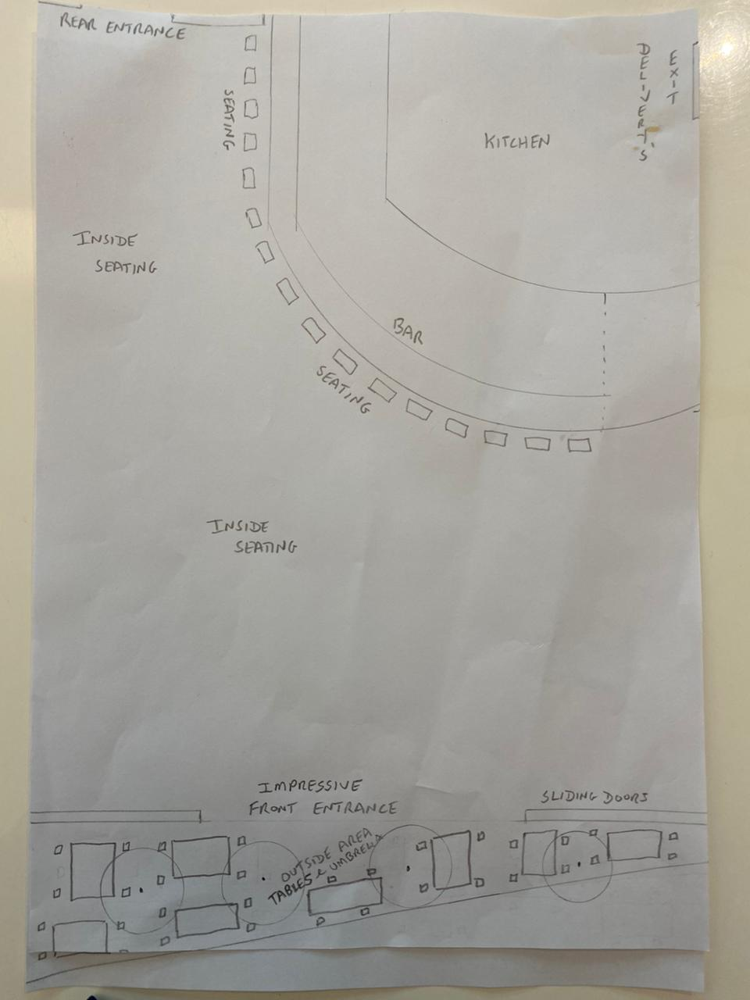
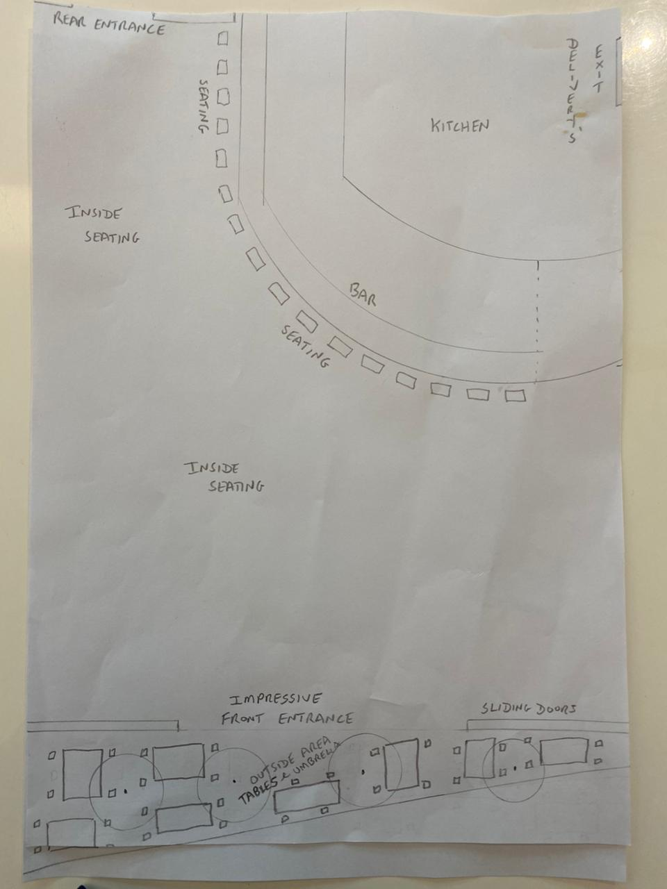

Concept & Quality
Our restaurant will be outfitted to the highest standards with all new furnishings, including tables, chairs, plates, cutlery, cups, saucers, and glasses. We want to "stand out" from the rest.
Our clientele will come from various parts of Dubai, especially the local community where I have lived for the past 8 years. Many of them have asked when I would bring my UK-themed restaurant here because they know I understand what they and their children want and expect: a high-quality, upmarket restaurant serving delicious food at affordable prices.
Our concept is to provide this experience with a team of highly qualified staff, including a chef from our UK chain who is known for his high standards and consistent quality. We only source the best produce from top wholesalers and have zero tolerance for tasteless food.
Background & Experience
I am a British national, 53 years old, and have operated a number of successful businesses in both the UK and UAE. Back in the UK, I believe I was among the first to offer a buffet-style English carvery. I partnered in a restaurant called June's Diner and Bar, established over 25 years ago on the East Coast of Lincolnshire. This concept has since been adapted by many popular chains, especially Irish bars.
As you will see in the documented pictures in the carvery section, we will be making this one of our big weekend features as it's very popular with all nationalities. I believe ours will be a big winner, especially for the surrounding area, because of the massive selection of over 16 vegetables, all sourced for freshness, flavor, and taste at an affordable price. I was also a partner in Damons restaurant in Sheffield, England. This restaurant became known for its American diner-themed menu and was famous for its Barbecue Ribs, Combo Platters, Finest Seafood, Gourmet Burgers, Fillet steaks, Fish and Chips, the Famous English breakfast, and the Weekend roast carvery buffet.
I've lived in Dubai Green Community for the past 8 years. Additionally, I hold a Doctor of Finance degree.
 
